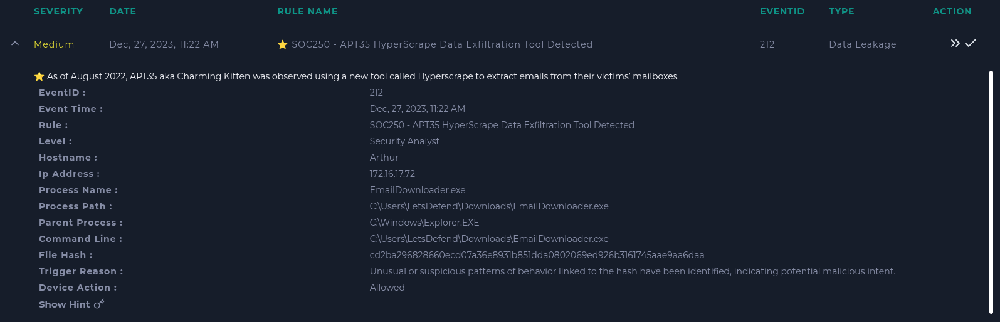
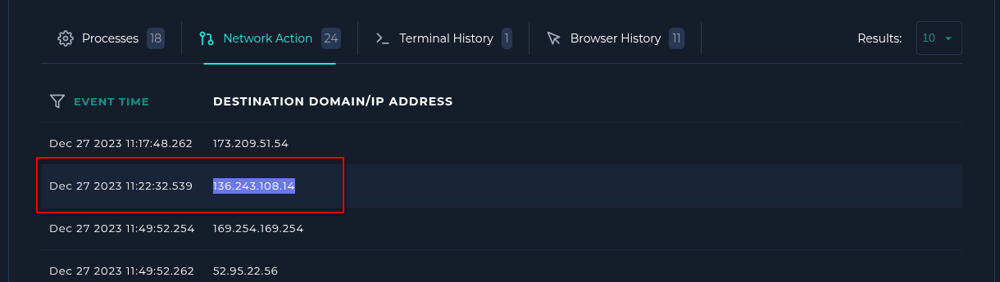
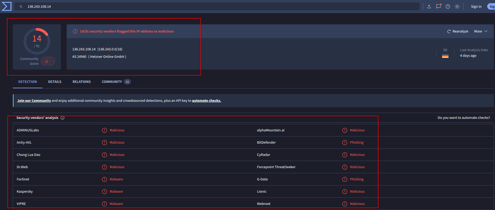
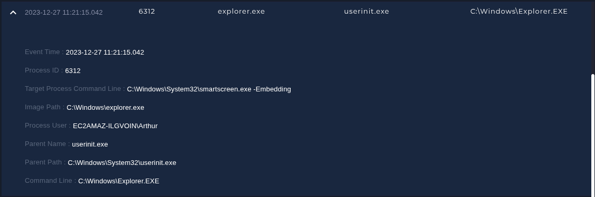
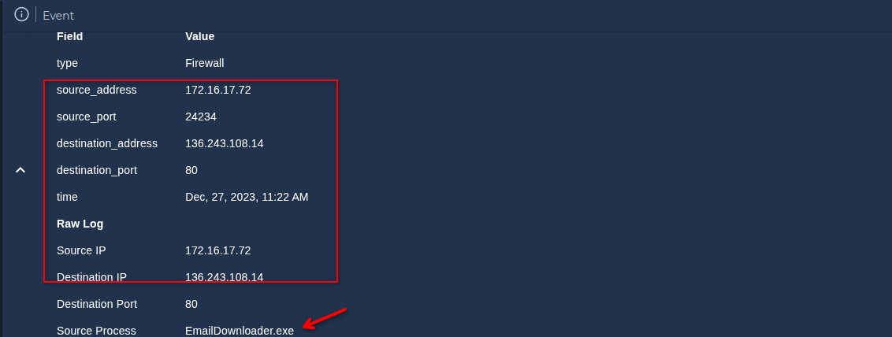
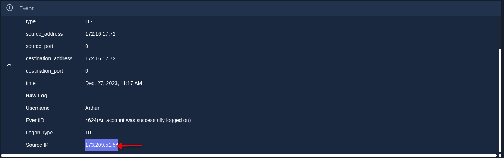

Lo primero que he hecho es ir al equipo afectado (que se llama Arthur) en Endpoint Security para ver el historial del equipo y empezar a buscar posibles indicios desde ahí.

Al revisar el historial de conexiones, he encontrado una dirección IP donde el equipo se comunicó a la misma hora donde se levantó la alerta. Al copiar la IP y ponerla en VirusTotal, se confirma que dicha dirección es maliciosa, por lo que sabemos de momento de que el equipo se infectó y contactó con dicha IP.


Además, revisando los procesos del equipo, encontramos un .exe sospechoso ejecutándose en la carpeta "Windows", que coincide con la alerta que saltó al principio.

Ahora, revisaré los logs de dicha IP para saber qué más hizo el malware al equipo. Encontré dos logs relevantes. Uno a las 11:17 de la mañana indicando que el usuario se logueó correctamente al equipo, y justo a las 11:22, el equipo comunicándose con dicha IP maliciosa para descargar el archivo, con el proceso EmailDownloader.exe.

Revisando el log del inicio exitoso de sesión de las 11:17 de la mañana, nos apunta a otra IP, que es 173.209.51.54, y al pasarla por VirusTotal, nos da también que es maliciosa en 2 motores, y es sospechosa en otra más.

Positivo verdadero. Se tiene que contener el equipo, no hubo más equipos afectados, la IP era maliciosa y el tipo de reconocimiento era para obtener información de la víctima y preparar ataques adicionales, además de usarlo por email, aunque no encontré nada relacionado al email de la víctima.